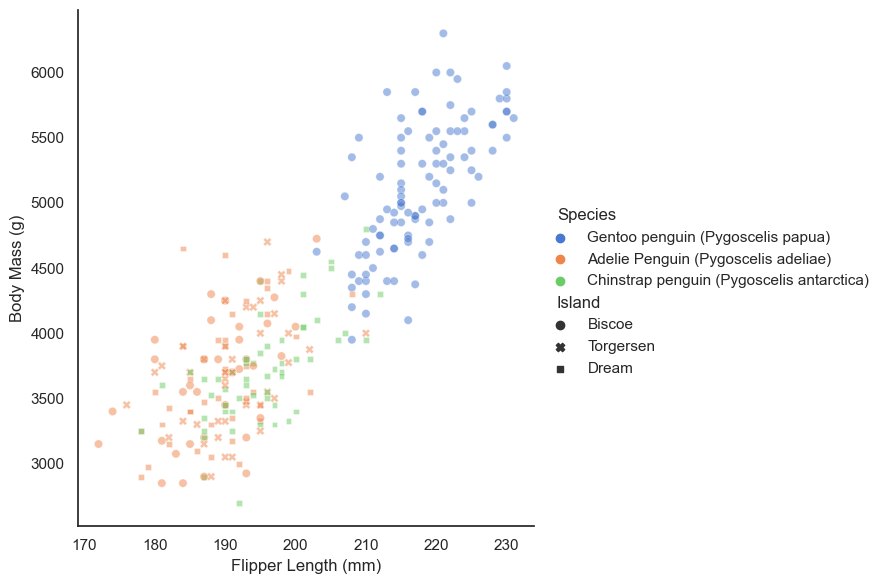

import pandas as pd
import numpy as np
train_url = "https://raw.githubusercontent.com/middlebury-csci-0451/CSCI-0451/main/data/palmer-penguins/train.csv"
train = pd.read_csv(train_url)
np.random.seed(12345)Penguins Blog
from sklearn.preprocessing import LabelEncoder
le = LabelEncoder()
le.fit(train["Species"])
def prepare_data(df):
df = df.drop(["studyName", "Sample Number", "Individual ID", "Date Egg", "Comments", "Region"], axis = 1)
df = df[df["Sex"] != "."]
df = df.dropna()
y = le.transform(df["Species"])
df = df.drop(["Species"], axis = 1)
df = pd.get_dummies(df)
return df, y
X_train, y_train = prepare_data(train)t=train.groupby(["Species","Sex"]).agg({"Body Mass (g)":["mean","std"],"Flipper Length (mm)":["mean","std"], "Culmen Depth (mm)":["mean","std"],"Culmen Length (mm)":["mean","std"] })
t| Body Mass (g) | Flipper Length (mm) | Culmen Depth (mm) | Culmen Length (mm) | ||||||
|---|---|---|---|---|---|---|---|---|---|
| mean | std | mean | std | mean | std | mean | std | ||
| Species | Sex | ||||||||
| Adelie Penguin (Pygoscelis adeliae) | FEMALE | 3337.280702 | 267.558522 | 187.719298 | 5.966437 | 17.645614 | 0.900609 | 37.100000 | 2.108825 |
| MALE | 4020.454545 | 332.467309 | 192.690909 | 6.440246 | 19.116364 | 1.076304 | 40.458182 | 2.228161 | |
| Chinstrap penguin (Pygoscelis antarctica) | FEMALE | 3514.655172 | 295.843018 | 191.551724 | 5.295458 | 17.641379 | 0.801569 | 46.424138 | 2.390704 |
| MALE | 3936.111111 | 396.216077 | 199.666667 | 6.244998 | 19.303704 | 0.801672 | 51.185185 | 1.689266 | |
| Gentoo penguin (Pygoscelis papua) | . | 4875.000000 | NaN | 217.000000 | NaN | 15.700000 | NaN | 44.500000 | NaN |
| FEMALE | 4677.976190 | 283.015253 | 212.928571 | 4.050853 | 14.242857 | 0.539712 | 45.600000 | 2.117177 | |
| MALE | 5502.314815 | 302.671615 | 221.462963 | 5.578642 | 15.687037 | 0.719551 | 49.592593 | 2.713478 | |
This table shows the variation between male and female members of each species. It shows the mean of a given value, as well as the standard deviation, allowing us to see which of these features are the most or least varied amongst a population. From this table we can see that the males of each species are larger than the females in all of our categories. We can also see that the Gentoo penguins are the most uniform in size, as the standard deviations for the features are smaller than those of the other species, despite them being the largest in most categories.
import seaborn as sns
sns.set_theme(style="white")
sns.relplot(x="Flipper Length (mm)", y="Body Mass (g)", hue="Species", style = ("Island"),
sizes=(40, 400), alpha=.5, palette="muted",
height=6, data=train)<seaborn.axisgrid.FacetGrid at 0x7fbf66784dc0>
From this figure we can see several things. First, we can see that while Adelie and Chinstrap Penguins are pretty in terms of flipper length and body mass, Gentoo penguins are significantly larger. We can also see that Adelie penguins are the only ones that are on multiple islands. We can also see that there is a positive linear correlation between body mass and flipper length.
X_train| Culmen Length (mm) | Culmen Depth (mm) | Flipper Length (mm) | Body Mass (g) | Delta 15 N (o/oo) | Delta 13 C (o/oo) | Island_Biscoe | Island_Dream | Island_Torgersen | Stage_Adult, 1 Egg Stage | Clutch Completion_No | Clutch Completion_Yes | Sex_FEMALE | Sex_MALE | |
|---|---|---|---|---|---|---|---|---|---|---|---|---|---|---|
| 1 | 45.1 | 14.5 | 215.0 | 5000.0 | 7.63220 | -25.46569 | 1 | 0 | 0 | 1 | 0 | 1 | 1 | 0 |
| 2 | 41.4 | 18.5 | 202.0 | 3875.0 | 9.59462 | -25.42621 | 0 | 0 | 1 | 1 | 0 | 1 | 0 | 1 |
| 3 | 39.0 | 18.7 | 185.0 | 3650.0 | 9.22033 | -26.03442 | 0 | 1 | 0 | 1 | 0 | 1 | 0 | 1 |
| 4 | 50.6 | 19.4 | 193.0 | 3800.0 | 9.28153 | -24.97134 | 0 | 1 | 0 | 1 | 1 | 0 | 0 | 1 |
| 5 | 33.1 | 16.1 | 178.0 | 2900.0 | 9.04218 | -26.15775 | 0 | 1 | 0 | 1 | 0 | 1 | 1 | 0 |
| ... | ... | ... | ... | ... | ... | ... | ... | ... | ... | ... | ... | ... | ... | ... |
| 269 | 41.1 | 17.5 | 190.0 | 3900.0 | 8.94365 | -26.06943 | 0 | 1 | 0 | 1 | 0 | 1 | 0 | 1 |
| 270 | 45.4 | 14.6 | 211.0 | 4800.0 | 8.24515 | -25.46782 | 1 | 0 | 0 | 1 | 0 | 1 | 1 | 0 |
| 271 | 36.2 | 17.2 | 187.0 | 3150.0 | 9.04296 | -26.19444 | 0 | 0 | 1 | 1 | 1 | 0 | 1 | 0 |
| 272 | 50.0 | 15.9 | 224.0 | 5350.0 | 8.20042 | -26.39677 | 1 | 0 | 0 | 1 | 0 | 1 | 0 | 1 |
| 273 | 48.2 | 14.3 | 210.0 | 4600.0 | 7.68870 | -25.50811 | 1 | 0 | 0 | 1 | 0 | 1 | 1 | 0 |
256 rows × 14 columns
from sklearn.ensemble import RandomForestClassifier
from itertools import combinations
FRC = RandomForestClassifier()
all_quant_cols = ['Culmen Length (mm)', 'Culmen Depth (mm)', 'Flipper Length (mm)','Body Mass (g)','Delta 15 N (o/oo)','Delta 13 C (o/oo)']
all_qual_cols = ["Clutch Completion", "Sex", "Island"]
score_1_cols = []
for qual in all_qual_cols:
qual_cols = [col for col in X_train.columns if qual in col ]
for pair in combinations(all_quant_cols, 2):
cols = qual_cols + list(pair)
FRC.fit(X_train[cols],y_train)
if (FRC.score(X_train[cols],y_train)== 1.0):
score_1_cols.append(cols)
print(score_1_cols[17])['Sex_FEMALE', 'Sex_MALE', 'Culmen Depth (mm)', 'Delta 15 N (o/oo)']cols = ['Culmen Depth (mm)', 'Delta 15 N (o/oo)','Sex_FEMALE', 'Sex_MALE']
FRC.fit(X_train[cols],y_train)
print (len(score_1_cols))
FRC.score(X_train[cols],y_train)371.0Using the Random Forest Classifier on all possible combinations of qualitative and quantitative data we get 36 combinations that achieve a training score of 1.0. I will select the 17th column to look at.
test_url = "https://raw.githubusercontent.com/middlebury-csci-0451/CSCI-0451/main/data/palmer-penguins/test.csv"
test = pd.read_csv(test_url)
X_test, y_test = prepare_data(test)
FRC.score(X_test[cols], y_test)0.8088235294117647We can see this column has a validation score of 0.8382, a very good score. If we plot it to get the decision boundaries we get:
from matplotlib.patches import Patch
from matplotlib import pyplot as plt
import numpy as np
def plot_regions(model, X, y):
x0 = X[X.columns[0]]
x1 = X[X.columns[1]]
qual_features = X.columns[2:]
fig, axarr = plt.subplots(1, len(qual_features), figsize = (7, 3))
# create a grid
grid_x = np.linspace(x0.min(),x0.max(),501)
grid_y = np.linspace(x1.min(),x1.max(),501)
xx, yy = np.meshgrid(grid_x, grid_y)
XX = xx.ravel()
YY = yy.ravel()
for i in range(len(qual_features)):
XY = pd.DataFrame({
X.columns[0] : XX,
X.columns[1] : YY
})
for j in qual_features:
XY[j] = 0
XY[qual_features[i]] = 1
p = model.predict(XY)
p = p.reshape(xx.shape)
# use contour plot to visualize the predictions
axarr[i].contourf(xx, yy, p, cmap = "jet", alpha = 0.2, vmin = 0, vmax = 2)
ix = X[qual_features[i]] == 1
# plot the data
axarr[i].scatter(x0[ix], x1[ix], c = y[ix], cmap = "jet", vmin = 0, vmax = 2)
axarr[i].set(xlabel = X.columns[0],
ylabel = X.columns[1])
patches = []
for color, spec in zip(["red", "green", "blue"], ["Adelie", "Chinstrap", "Gentoo"]):
patches.append(Patch(color = color, label = spec))
plt.legend(title = "Species", handles = patches, loc = "best")
plt.tight_layout()FRC.fit(X_train[cols],y_train)
plot_regions(FRC, X_test[cols], y_test)